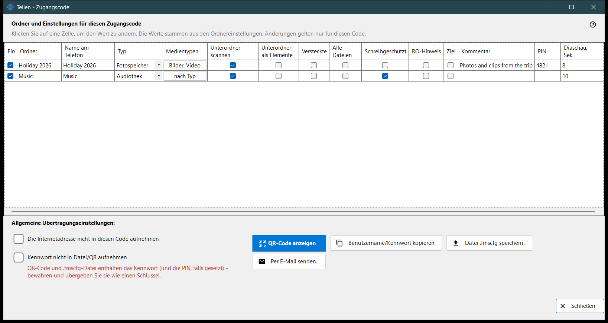
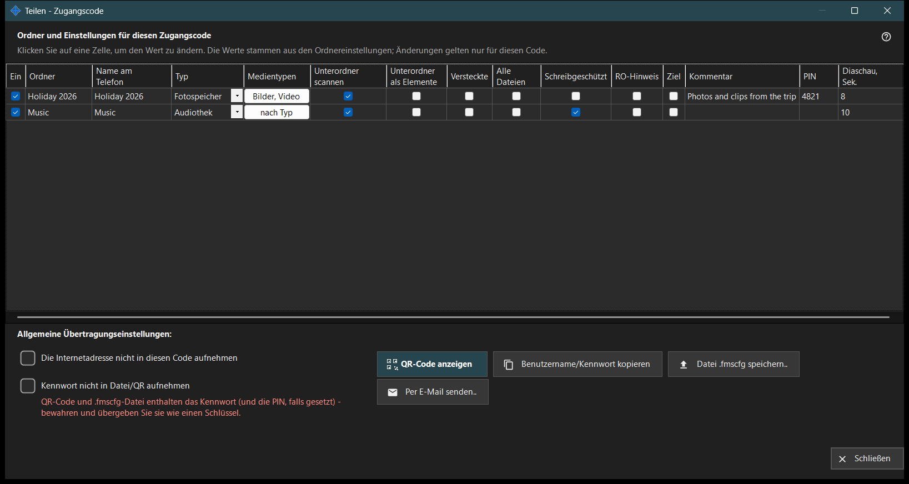

Teilen - Zugangscode
Verwendungszweck
Erstellt den Zugangscode für ein Telefon: einen QR-Code und eine .fmscfg-Datei, die die Adresse, den Benutzernamen und die gewählten Ordner enthalten. Er öffnet sich über die Schaltfläche «Teilen» des Hauptfensters, solange die Freigabe läuft, und prüft vor der Ausgabe des Codes, dass das Telefon den PC wirklich erreichen kann.


In dieser Reihenfolge
- Setzen Sie Häkchen bei den Ordnern, die in den Code sollen.
- Ändern Sie jede Zelle der Tabelle, die für diesen Code anders sein soll.
- Setzen Sie bei Bedarf ein Häkchen bei «Die Internetadresse nicht in diesen Code aufnehmen» oder «Kennwort nicht in Datei/QR aufnehmen».
- Warten Sie die Zugriffsprüfung ab.
- Zeigen Sie den QR-Code an, speichern Sie die .fmscfg-Datei, senden Sie sie per E-Mail oder kopieren Sie Benutzername und Kennwort.
Die Elemente
Ordner und Einstellungen für diesen Zugangscode
Eine Zeile pro freigegebenem Ordner mit den Spalten Ein, Ordner, Name am Telefon, Typ, Medientypen, Unterordner scannen, Unterordner als Elemente, Versteckte, Schreibgeschützt, RO-Hinweis, Ziel, Kommentar und Diaschau, Sek.. Klicken Sie auf eine Zelle, um sie zu ändern. Die Werte stammen aus den Einstellungen des jeweiligen Ordners, und Änderungen gelten nur für diesen Code. «Schreibgeschützt» ist eine echte Sperre auf dem Server; «RO-Hinweis» blendet in der App nur die Bearbeiten-Schaltflächen aus. Ein Zielordner ist immer beschreibbar, daher gilt «Schreibgeschützt» für ihn nicht.
Allgemeine Übertragungseinstellungen
«Die Internetadresse nicht in diesen Code aufnehmen» sorgt dafür, dass sich das Telefon nur über das lokale Netzwerk verbindet; der Server wird dadurch nicht abgeschaltet, und der Internetzugriff für die gesamte Freigabe wird in den Einstellungen des Managers geschlossen. «Kennwort nicht in Datei/QR aufnehmen» entfernt das Kennwort aus dem Code; geben Sie es getrennt weiter. Ob das Telefon einen Code ohne Kennwort annimmt, hängt von der App-Version ab.
Zugriffsprüfung
Während der Zustand abgerufen wird, steht dies im Fenster. Läuft der Server nicht, ist kein Ordner markiert oder gibt es keine brauchbare Adresse, nennt ein Hinweis, was fehlt. Wird die Prüfung nicht abgeschlossen, werden der Code und die Datei nicht ausgegeben: Drücken Sie «Zugriff erneut prüfen».
QR-Code anzeigen
Der QR-Code und die .fmscfg-Datei öffnen den Zugriff auf die Ordner und enthalten das Kennwort und gegebenenfalls die PIN - bewahren Sie sie auf und geben Sie sie weiter wie einen Schlüssel. Sind die Einstellungen für einen QR-Code zu umfangreich, speichern Sie die Datei und senden Sie sie stattdessen.
Datei, E-Mail und Benutzername
«Datei .fmscfg speichern..» schreibt die Datei; auf einem Dateisystem, das den Zugriff nicht einschränken kann, oder in einem Ordner, den andere ändern können, verweigert das Fenster dies, weil die Datei einen Zugangsschlüssel enthält. «Per E-Mail senden..» hängt die Datei mit dem Hinweis an, sie in der Android-App zu importieren und danach zu löschen. «Benutzername/Kennwort kopieren» legt beides in die Zwischenablage.
Managereinstellungen · SFTP-Freigabeeinstellungen · Einstellungen des Austauschservers